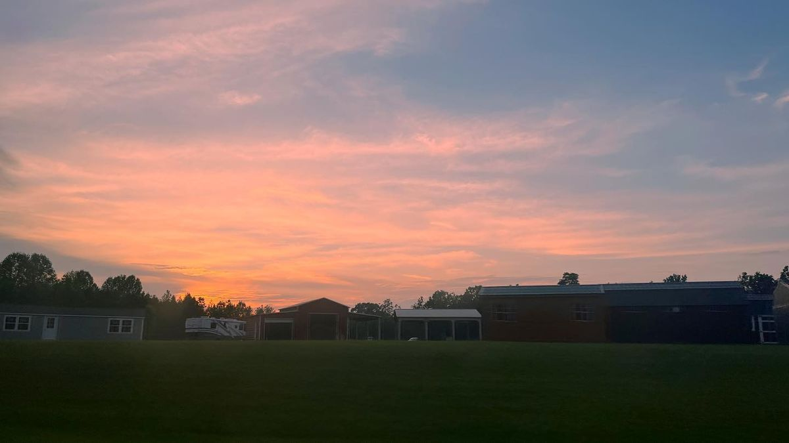

About T1 Research & Development
Web & Media, from Walton County, Georgia.
Hi, I'm Brayden.
I started T1 Research & Development because local businesses in Walton County deserved better than a template site built by someone three states away — or no site at all.
I'm a photographer first (@t1.research on Instagram) and a tech person second. That combination is the whole business: websites that look good, backups that actually work, and tech help from someone who shows up in person.
Every service here is something I do myself, for people I can meet face to face. When you call, you get me.
18
services offered
Walton County
based in Georgia
@t1.research
photography on Instagram

Sunset over a Georgia field — one of mine, from @t1.research.